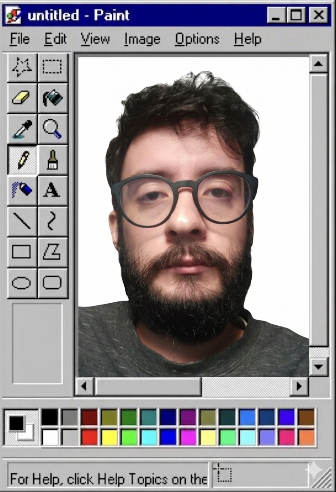

Hi there! 👋
My name is Mario Barros. I'm a Software Engineering post-graduate student
@dipucriodigital.
I'm deeply interested in anything tech-related, from self-hosted applications and cybersecurity to UX/UI and game development.
I am especially fond of game development and have been engaged in various small personal projects over the years in
Unity3D, LÖVE2D (Lua game framework), and Godot.
Currently, I work as an International Media Analyst at a publicity agency. Our purpose is to connect digital media professionals with international teams to deliver value, efficiency, agility, and quality in their operations, tailored to the specific challenges of each project and partner.
I'm constantly eager to learn and discover new things. Specifically, the main areas and tools I am focusing on to gain deeper knowledge at the moment are:
Python, Flask, JavaScript, HTML, CSS, Docker, Git, and Linux.

About the site
This page is under construction and will host some of my working projects and life adventures :)
Contact
- GitHub: github.com/mariofbarros
- Email: mariofbarros.fsma@gmail.com
- LinkedIn: linkedin.com/in/mario-ferreira-de-barros